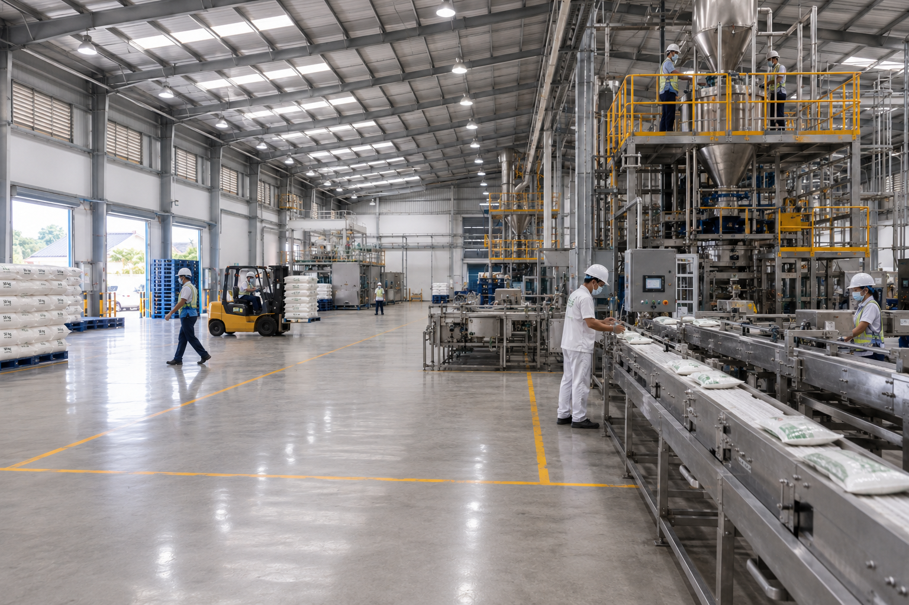
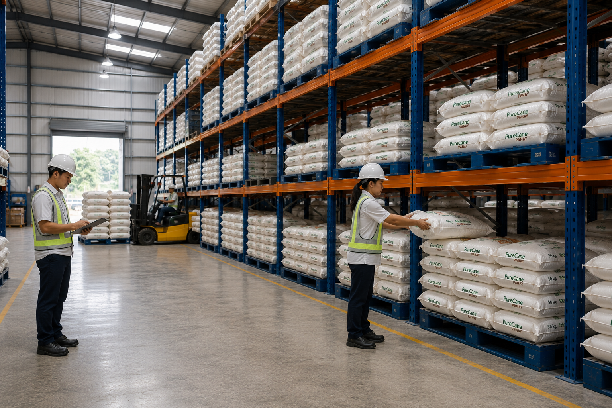
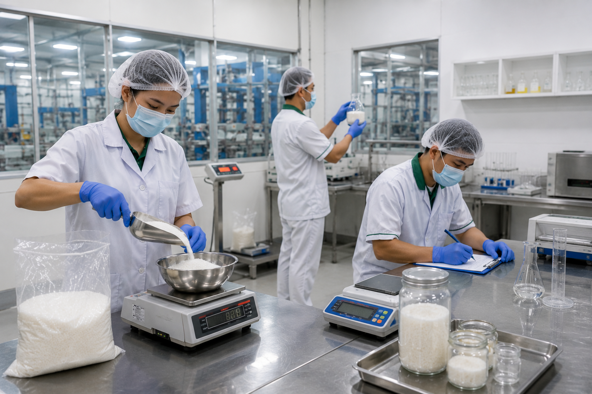
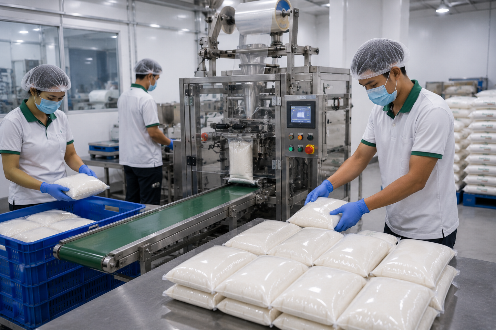
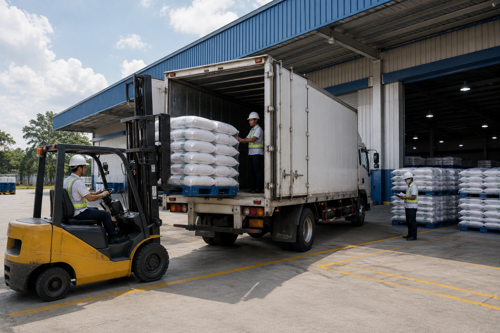
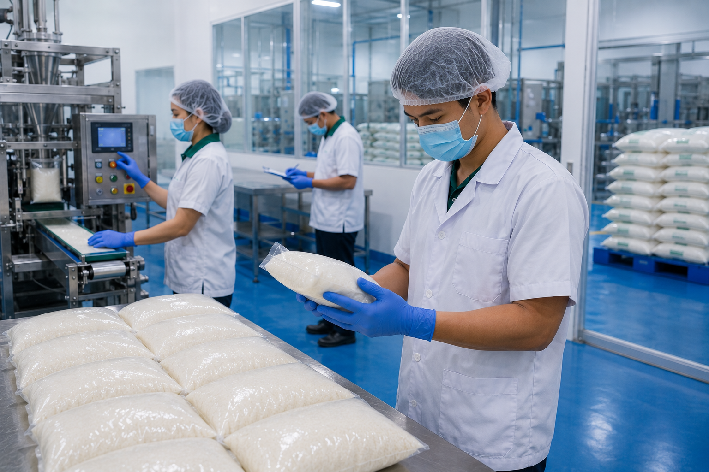

Main Operations
A Connected Facility for Dependable Supply
Organized operations supporting efficient product movement from handling to delivery.

From receiving and quality inspection to packaging, warehousing, and nationwide distribution, our facilities are designed to support dependable sugar supply for every business partner.
Every stage of our operation is carefully organized to maintain product quality, food safety, and reliable delivery. Our workflow allows PureCane Panay to consistently serve wholesalers, retailers, distributors, and industrial partners.
Proper storage conditions for consistent product quality.
Efficient packaging designed for speed and accuracy.
Nationwide logistics supporting timely product delivery.
Our facilities are organized around the essential stages of commercial sugar supply—from receiving and product handling to inspection, packaging, storage, and delivery preparation.
Each area supports an efficient workflow while maintaining cleanliness, responsible handling, and reliable coordination for our business partners.
Organized operations supporting efficient product movement from handling to delivery.





PureCane Panay follows organized production practices, proper handling procedures, and consistent quality inspections to support dependable supply for commercial customers.
Our logistics process connects organized warehousing, accurate order preparation, and coordinated loading to support timely sugar delivery for businesses across Panay and other service areas.
Product quantities and packaging requirements are checked before dispatch.
Products are carefully arranged and prepared for safe transport.
Delivery schedules are organized according to customer and business requirements.
Connect with our team to discuss sugar requirements, packaging options, wholesale orders, and delivery arrangements.